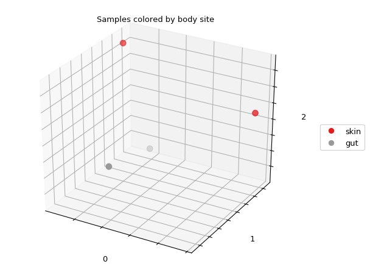

skbio.stats.ordination.OrdinationResults.plot¶
-
OrdinationResults.plot(df=None, column=None, axes=(0, 1, 2), axis_labels=None, title='', cmap=None, s=20)[source]¶ Create a 3-D scatterplot of ordination results colored by metadata.
State: Experimental as of 0.4.0.
Creates a 3-D scatterplot of the ordination results, where each point represents a sample. Optionally, these points can be colored by metadata (see df and column below).
- Parameters
df (pd.DataFrame, optional) –
DataFramecontaining sample metadata. Must be indexed by sample ID, and all sample IDs in the ordination results must exist in theDataFrame. IfNone, samples (i.e., points) will not be colored by metadata.column (str, optional) – Column name in df to color samples (i.e., points in the plot) by. Cannot have missing data (i.e.,
np.nan). column can be numeric or categorical. If numeric, all values in the column will be cast tofloatand mapped to colors using cmap. A colorbar will be included to serve as a legend. If categorical (i.e., not all values in column could be cast tofloat), colors will be chosen for each category using evenly-spaced points along cmap. A legend will be included. IfNone, samples (i.e., points) will not be colored by metadata.axes (iterable of int, optional) – Indices of sample coordinates to plot on the x-, y-, and z-axes. For example, if plotting PCoA results,
axes=(0, 1, 2)will plot PC 1 on the x-axis, PC 2 on the y-axis, and PC 3 on the z-axis. Must contain exactly three elements.axis_labels (iterable of str, optional) – Labels for the x-, y-, and z-axes. If
None, labels will be the values of axes cast as strings.title (str, optional) – Plot title.
cmap (str or matplotlib.colors.Colormap, optional) – Name or instance of matplotlib colormap to use for mapping column values to colors. If
None, defaults to the colormap specified in the matplotlib rc file. Qualitative colormaps (e.g.,Set1) are recommended for categorical data, while sequential colormaps (e.g.,Greys) are recommended for numeric data. See 1 for these colormap classifications.s (scalar or iterable of scalars, optional) – Size of points. See matplotlib’s
Axes3D.scatterdocumentation for more details.
- Returns
Figure containing the scatterplot and legend/colorbar if metadata were provided.
- Return type
- Raises
ValueError – Raised on invalid input, including the following situations: - there are not at least three dimensions to plot - there are not exactly three values in axes, they are not unique, or are out of range - there are not exactly three values in axis_labels - either df or column is provided without the other - column is not in the
DataFrame- sample IDs in the ordination results are not in df or have missing data in column
Notes
This method creates basic plots of ordination results, and is intended to provide a quick look at the results in the context of metadata (e.g., from within the IPython Notebook). For more customization and to generate publication-quality figures, we recommend EMPeror 2.
References
- 1
http://matplotlib.org/examples/color/colormaps_reference.html
- 2
EMPeror: a tool for visualizing high-throughput microbial community data. Vazquez-Baeza Y, Pirrung M, Gonzalez A, Knight R. Gigascience. 2013 Nov 26;2(1):16. http://biocore.github.io/emperor/
Examples
Define a distance matrix with four samples labelled A-D:
>>> from skbio import DistanceMatrix >>> dm = DistanceMatrix([[0., 0.21712454, 0.5007512, 0.91769271], ... [0.21712454, 0., 0.45995501, 0.80332382], ... [0.5007512, 0.45995501, 0., 0.65463348], ... [0.91769271, 0.80332382, 0.65463348, 0.]], ... ['A', 'B', 'C', 'D'])
Define metadata for each sample in a
pandas.DataFrame:>>> import pandas as pd >>> metadata = { ... 'A': {'body_site': 'skin'}, ... 'B': {'body_site': 'gut'}, ... 'C': {'body_site': 'gut'}, ... 'D': {'body_site': 'skin'}} >>> df = pd.DataFrame.from_dict(metadata, orient='index')
Run principal coordinate analysis (PCoA) on the distance matrix:
>>> from skbio.stats.ordination import pcoa >>> pcoa_results = pcoa(dm)
Plot the ordination results, where each sample is colored by body site (a categorical variable):
>>> fig = pcoa_results.plot(df=df, column='body_site', ... title='Samples colored by body site', ... cmap='Set1', s=50)
(Source code, png)

{kind=link}